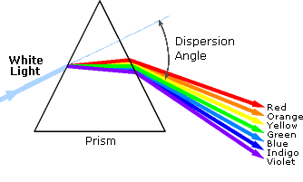
An obvious difference between certain compounds is their color. Thus, quinone is yellow; chlorophyll is green; the 2,4-dinitrophenylhydrazone derivatives of aldehydes and ketones range in color from bright yellow to deep red, depending on double bond conjugation; and aspirin is colorless. In this respect the human eye is functioning as a spectrometer analyzing the light reflected from the surface of a solid or passing through a liquid. Although we see sunlight (or white light) as uniform or homogeneous in color, it is actually composed of a broad range of radiation wavelengths in the ultraviolet (UV), visible and infrared (IR) portions of the spectrum. As shown on the right, the component colors of the visible portion can be separated by passing sunlight through a prism, which acts to bend the light in differing degrees according to wavelength. Electromagnetic radiation such as visible light is commonly treated as a wave phenomenon, characterized by a wavelength or frequency. Wavelength is defined on the left below, as the distance between adjacent peaks (or troughs), and may be designated in meters, centimeters or nanometers (10-9 meters). Frequency is the number of wave cycles that travel past a fixed point per unit of time, and is usually given in cycles per second, or hertz (Hz). Visible wavelengths cover a range from approximately 400 to 800 nm. The longest visible wavelength is red and the shortest is violet. Other common colors of the spectrum, in order of decreasing wavelength, may be remembered by the mnemonic: ROY G BIV. The wavelengths of what we perceive as particular colors in the visible portion of the spectrum are displayed and listed below. In horizontal diagrams, such as the one on the bottom left, wavelength will increase on moving from left to right.
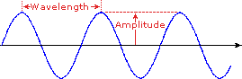
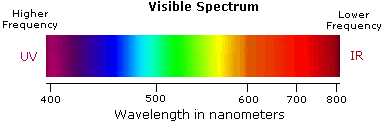
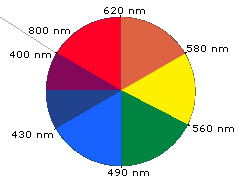
When white light passes through or is reflected by a colored substance, a characteristic portion of the mixed wavelengths is absorbed. The remaining light will then assume the complementary color to the wavelength(s) absorbed. This relationship is demonstrated by the color wheel shown on the right. Here, complementary colors are diametrically opposite each other. Thus, absorption of 420-430 nm light renders a substance yellow, and absorption of 500-520 nm light makes it red. Green is unique in that it can be created by absoption close to 400 nm as well as absorption near 800 nm. Early humans valued colored pigments, and used them for decorative purposes. Many of these were inorganic minerals, but several important organic dyes were also known. These included the crimson pigment, kermesic acid, the blue dye, indigo, and the yellow saffron pigment, crocetin. A rare dibromo-indigo derivative, punicin, was used to color the robes of the royal and wealthy. The deep orange hydrocarbon carotene is widely distributed in plants, but is not sufficiently stable to be used as permanent pigment, other than for food coloring. A common feature of all these colored compounds, displayed below, is a system of extensively conjugated pi-electrons.
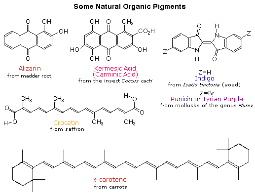
The visible spectrum constitutes but a small part of the total radiation spectrum. Most of the radiation that surrounds us cannot be seen, but can be detected by dedicated sensing instruments. This electromagnetic spectrum ranges from very short wavelengths (including gamma and x-rays) to very long wavelengths (including microwaves and broadcast radio waves). The following chart displays many of the important regions of this spectrum, and demonstrates the inverse relationship between wavelength and frequency (shown in the top equation below the chart).
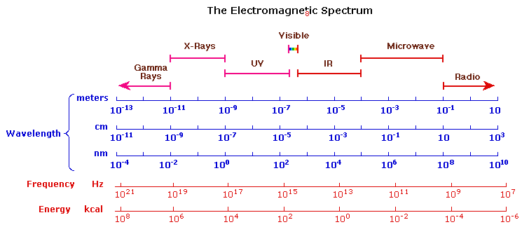
The energy associated with a given segment of the spectrum is proportional to its frequency. The bottom equation describes this relationship, which provides the energy carried by a photon of a given wavelength of radiation.
To obtain specific frequency, wavelength and energy values use this calculator.
To understand why some compounds are colored and others are not, and to determine the relationship of conjugation to color, we must make accurate measurements of light absorption at different wavelengths in and near the visible part of the spectrum. Commercial optical spectrometers enable such experiments to be conducted with ease, and usually survey both the near ultraviolet and visible portions of the spectrum.
For a description of a UV-Visible spectrometer Click Here.
The visible region of the spectrum comprises photon energies of 36 to 72 kcal/mole, and the near ultraviolet region, out to 200 nm, extends this energy range to 143 kcal/mole. Ultraviolet radiation having wavelengths less than 200 nm is difficult to handle, and is seldom used as a routine tool for structural analysis.
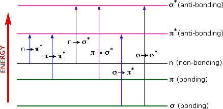
The energies noted above are sufficient to promote or excite a molecular electron to a higher energy orbital. Consequently, absorption spectroscopy carried out in this region is sometimes called "electronic spectroscopy". A diagram showing the various kinds of electronic excitation that may occur in organic molecules is shown on the left. Of the six transitions outlined, only the two lowest energy ones (left-most, colored blue) are achieved by the energies available in the 200 to 800 nm spectrum. As a rule, energetically favored electron promotion will be from the highest occupied molecular orbital (HOMO) to the lowest unoccupied molecular orbital (LUMO), and the resulting species is called an excited state. For a review of molecular orbitals click here. When sample molecules are exposed to light having an energy that matches a possible electronic transition within the molecule, some of the light energy will be absorbed as the electron is promoted to a higher energy orbital. An optical spectrometer records the wavelengths at which absorption occurs, together with the degree of absorption at each wavelength. The resulting spectrum is presented as a graph of absorbance (A) versus wavelength, as in the isoprene spectrum shown below. Since isoprene is colorless, it does not absorb in the visible part of the spectrum and this region is not displayed on the graph. Absorbance usually ranges from 0 (no absorption) to 2 (99% absorption), and is precisely defined in context with spectrometer operation.
Because the absorbance of a sample will be proportional to the number of absorbing molecules in the spectrometer light beam (e.g. their molar concentration in the sample tube), it is necessary to correct the absorbance value for this and other operational factors if the spectra of different compounds are to be compared in a meaningful way. The corrected absorption value is called "molar absorptivity", and is particularly useful when comparing the spectra of different compounds and determining the relative strength of light absorbing functions (chromophores). Molar absorptivity (ε) is defined as:
Molar Absorptivity, ε = A / c l
(where A= absorbance, c = sample concentration in moles/liter & l = length of light path through the sample in cm.)
If the isoprene spectrum on the right was obtained from a dilute hexane solution (c = 4 * 10-5 moles per liter) in a 1 cm sample cuvette, a simple calculation using the above formula indicates a molar absorptivity of 20,000 at the maximum absorption wavelength. Indeed the entire vertical absorbance scale may be changed to a molar absorptivity scale once this information about the sample is in hand. Clicking on the spectrum will display this change in units.
Chromophore
Example
Excitation
λmax, nm
ε
Solvent
π __> π*
n __> π*π __> π*
n __> σ*n __> σ*
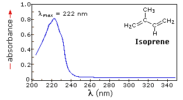
From the chart above it should be clear that the only molecular moieties likely to absorb light in the 200 to 800 nm region are pi-electron functions and hetero atoms having non-bonding valence-shell electron pairs. Such light absorbing groups are referred to as chromophores. A list of some simple chromophores and their light absorption characteristics is provided on the left above. The oxygen non-bonding electrons in alcohols and ethers do not give rise to absorption above 160 nm. Consequently, pure alcohol and ether solvents may be used for spectroscopic studies. The presence of chromophores in a molecule is best documented by UV-Visible spectroscopy, but the failure of most instruments to provide absorption data for wavelengths below 200 nm makes the detection of isolated chromophores problematic. Fortunately, conjugation generally moves the absorption maxima to longer wavelengths, as in the case of isoprene, so conjugation becomes the major structural feature identified by this technique. Molar absorptivities may be very large for strongly absorbing chromophores (>10,000) and very small if absorption is weak (10 to 100). The magnitude ofε reflects both the size of the chromophore and the probability that light of a given wavelength will be absorbed when it strikes the chromophore.
For further discussion of this topic Click Here.
A comparison of the absorption spectrum of 1-pentene, λmax = 178 nm, with that of isoprene (above) clearly demonstrates the importance of chromophore conjugation. Further evidence of this effect is shown below. The spectrum on the left illustrates that conjugation of double and triple bonds also shifts the absorption maximum to longer wavelengths. From the polyene spectra displayed in the center diagram, it is clear that each additional double bond in the conjugated pi-electron system shifts the absorption maximum about 30 nm in the same direction. Also, the molar absorptivity (ε) roughly doubles with each new conjugated double bond. Spectroscopists use the terms defined in the table on the right when describing shifts in absorption. Thus, extending conjugation generally results in bathochromic and hyperchromic shifts in absorption. The appearance of several absorption peaks or shoulders for a given chromophore is common for highly conjugated systems, and is often solvent dependent. This fine structure reflects not only the different conformations such systems may assume, but also electronic transitions between the different vibrational energy levels possible for each electronic state. Vibrational fine structure of this kind is most pronounced in vapor phase spectra, and is increasingly broadened and obscured in solution as the solvent is changed from hexane to methanol.
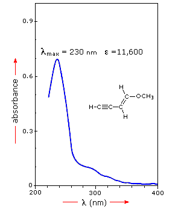
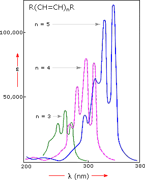
Nature of Shift
Descriptive Term
To understand why conjugation should cause bathochromic shifts in the absorption maxima of chromophores, we need to look at the relative energy levels of the pi-orbitals. When two double bonds are conjugated, the four p-atomic orbitals combine to generate four pi-molecular orbitals (two are bonding and two are antibonding). This was described earlier in the section concerning diene chemistry. In a similar manner, the three double bonds of a conjugated triene create six pi-molecular orbitals, half bonding and half antibonding. The energetically most favorable π __> π* excitation occurs from the highest energy bonding pi-orbital (HOMO) to the lowest energy antibonding pi-orbital (LUMO). The following diagram illustrates this excitation for an isolated double bond (only two pi-orbitals) and, on clicking the diagram, for a conjugated diene and triene. In each case the HOMO is colored blue and the LUMO is colored magenta. Increased conjugation brings the HOMO and LUMO orbitals closer together. The energy (ΔE) required to effect the electron promotion is therefore less, and the wavelength that provides this energy is increased correspondingly (remember λ = h • c/ΔE ).
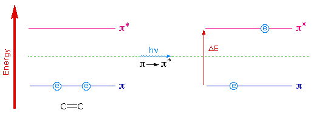
Examples of π __> π* ExcitationClick on the Diagram to Advance
Many other kinds of conjugated pi-electron systems act as chromophores and absorb light in the 200 to 800 nm region. These include unsaturated aldehydes and ketones and aromatic ring compounds. A few examples are displayed below. The spectrum of the unsaturated ketone (on the left) illustrates the advantage of a logarithmic display of molar absorptivity. The π __> π* absorption located at 242 nm is very strong, with an ε = 18,000. The weak n __> π* absorption near 300 nm has an ε = 100.
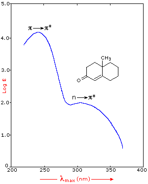
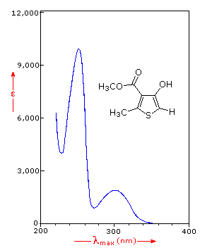
Benzene exhibits very strong light absorption near 180 nm (ε > 65,000) , weaker absorption at 200 nm (ε = 8,000) and a group of much weaker bands at 254 nm (ε = 240). Only the last group of absorptions are completely displayed because of the 200 nm cut-off characteristic of most spectrophotometers. The added conjugation in naphthalene, anthracene and tetracene causes bathochromic shifts of these absorption bands, as displayed in the chart on the left below. All the absorptions do not shift by the same amount, so for anthracene (green shaded box) and tetracene (blue shaded box) the weak absorption is obscured by stronger bands that have experienced a greater red shift. As might be expected from their spectra, naphthalene and anthracene are colorless, but tetracene is orange.
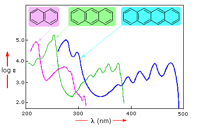
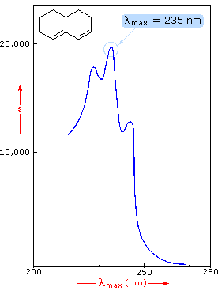
The spectrum of the bicyclic diene (above right) shows some vibrational fine structure, but in general is similar in appearance to that of isoprene, shown above. Closer inspection discloses that the absorption maximum of the more highly substituted diene has moved to a longer wavelength by about 15 nm. This "substituent effect" is general for dienes and trienes, and is even more pronounced for enone chromophores.
A set of empirical rules for predicting the λmax of such chromophores has been developed. These rules may be viewed by Clicking Here.
This page is the property of The Edvibe Team. Comments, questions and errors should be sent to contact@edvibe.co.ke. These pages are provided to the IOCD to assist in capacity building in chemical education. 05/05/2013